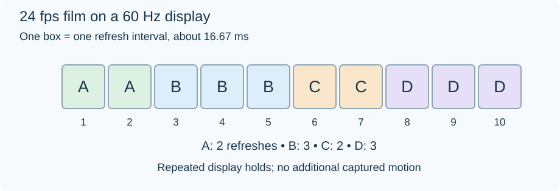

Frame-Rate Conversion
Frame-rate conversion adapts video to a different picture rate. The result depends on how pictures are added, removed, or retimed; selecting a higher number does not automatically create more captured motion.
| Method | What happens to the pictures | Effect on programme duration |
|---|---|---|
| Repeat or drop | Existing pictures fill new time slots | Can remain unchanged |
| Blend | Neighbouring pictures are mixed | Can remain unchanged |
| Motion interpolation | Estimated intermediate pictures are created | Can remain unchanged |
| Speed change | Existing pictures are played at a different pace | Changes unless another operation compensates |
Repeating pictures is inexpensive, but uneven repetition can cause judder. Blending can leave ghost-like edges. Motion interpolation can look smoother while introducing errors in the estimated movement.
Display cadence can change without a new file
A 24 fps film fits a 120 Hz display evenly: each picture lasts five refreshes. On a 60 Hz display, a common presentation alternates two and three refreshes per picture.

Original cadence schematic for exact 24 fps and 60 Hz. Ten refresh intervals present four film pictures. These are display holds, not interlaced fields or newly captured frames.
Display mode selection can sometimes avoid the need to convert the encoded video. Support depends on the Emby app, operating system, and connected display. A server's output frame rate and the display's active refresh rate should therefore be checked separately.
A speed change has a different purpose. Playing a 24 fps sequence at 25 fps makes it about 4.17% faster and shortens it. Audio and subtitles must follow the new timing; pitch handling is another processing decision.
When comparing an original file with a converted Emby stream, ask whether the timeline stayed the same, whether the number of unique pictures changed, and where any repetition was introduced. Those questions explain the visible result more accurately than the output fps value alone.